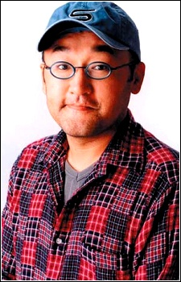

Fumihiko Tachiki is a Japanese voice actress. Tachiki is a former blue singer. He was a narrator for Fighting matches. He teamed up with Toshiyuki Morikawa to create the band 2HEARTS.
- Gender: Male
- Birthday: April 29, 1961
- Hometown: Nagasaki, Japan

|  |
Fumihiko Tachiki is a Japanese voice actress. Tachiki is a former blue singer. He was a narrator for Fighting matches. He teamed up with Toshiyuki Morikawa to create the band 2HEARTS.
|
|---|
 |
Professor Birch | Pokemon Advanced Generations | Professor Birch is the Hoenn professor. He gives trainers their first Pokemon. He often does his research outdoors. He studys how Pokemon behave in the wild. |